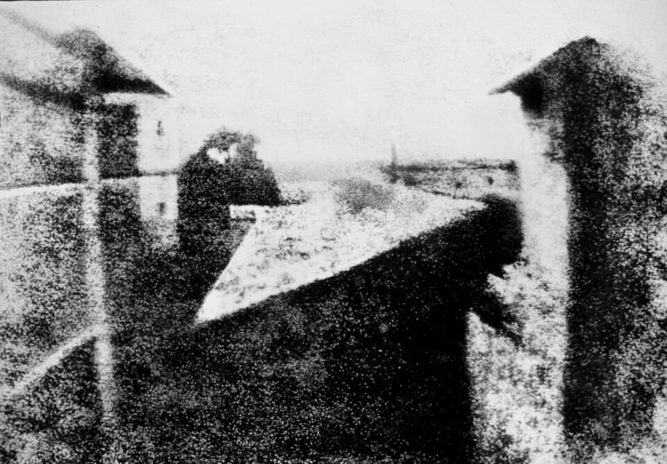

Photography is the art of capturing light with a camera, usually via a digital sensor or film, to create an image. With the right camera equipment, you can even photograph wavelengths of light invisible to the human eye, including UV, infrared, and radio.
The first permanent photograph was captured in 1826 (some sources say 1827) by Joseph Nicéphore Niépce in France. It shows the roof of a building lit by the sun. You can see it reproduced below :
 “View from the Window at Le Gras” by Joseph Nicéphore NiépceLets dive in the history of photography. Below is one of the most important photograph in the history of photography. Although this is just a brief bird's-eye view, these nonetheless are people you should know before you step into the technical side of photography: